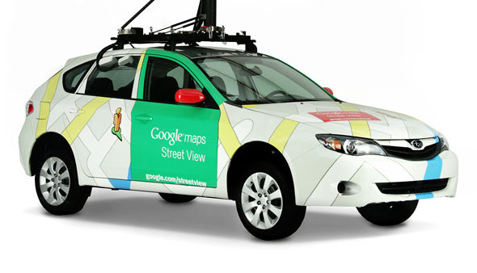

Crowdsourced
Streetview Photography
with

Sign Detection
and

Esri Integration
Who am I?

Elliott Plack
 What
What is Mapillary?
A photo representation of the world that anyone can improve
Where is it?
Worldwide coverage
Maryland
DC
Baltimore
53,158,470 photos
1,303,093.7 kilometers
...and growing
Why use Mapillary?

Easy to get going
Near realtime imagery
Go places the other guy hasn't

GIS + Mapillary
Asset management

Sign invetories

Road conditions
Hydrant survey

Business POI
Park trails

Improving maps
How to get involved?
Get the app
Get a mount
Get out there